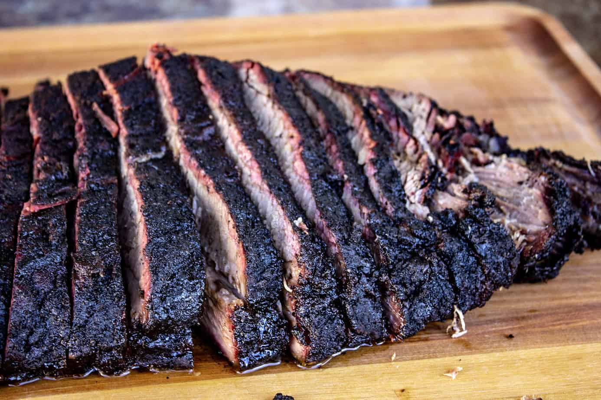

Smoked Brisket

Smoked Brisket is favored by many to be the king of BBQ'd meats. When it's done right, it's hard to be the deep, smokey, rich beefy flavor that only this cut can provide. The keys to a perfect brisket is taking the time to properly prep and trim your brisket, cook low and slow, and do not rush the proccess! You will be rewarded with a feast fit for a king.
Ingredients
- 1 whole packer brisket
- 1/2 cup diamond krystal kosher salt
- 1 cup 16 mesh black pepper
- Sharp trimming knife
- Your preferred hardwood or fuel
- Charcoal
- Cutcher paper
Method
- Trim your Brisket! It makes a huge difference. Follow this tutorial
- Season your brisket with the ratio of 2:1 black pepper to salt. This ratio ensures we can coat the brisket with as much seasoning as we want, and not over salt it! The black pepper also helps to provide that dark meteorite bark.
- Light a half-chimney of charcoal, and when the coals are ready add it to your smoker. Add a log.
- Heat your smoker to 250 degrees
- Try to keep a consistent 250 degrees in your smoker. There will be natural tempature swings, but the more consistent the heat, the smoother the cook will go.
- Smoke your brisket until a dark bark has formed, and your brisket reaches "the stall" pull the brisket off and wrap it tightly in butcher paper. The stall is where your briskt reachs a point where more heat is needed to help to render fat and sweat out water. The internal temp in the thickest part of the flat should be around 175-180
- Up the heat to 275 until the point and the flat are both in the 200-203 degress range.
- Pull your brisket and rest it for a minimum of 1 hour.
- Slice and enjoy!
Return to Main page